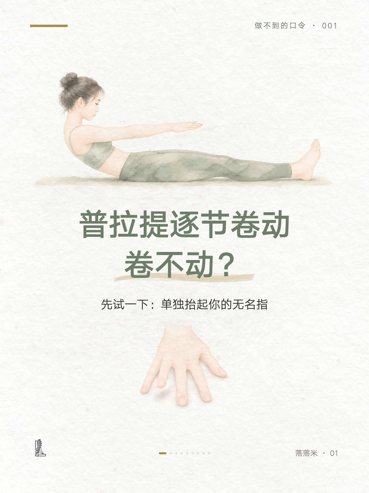
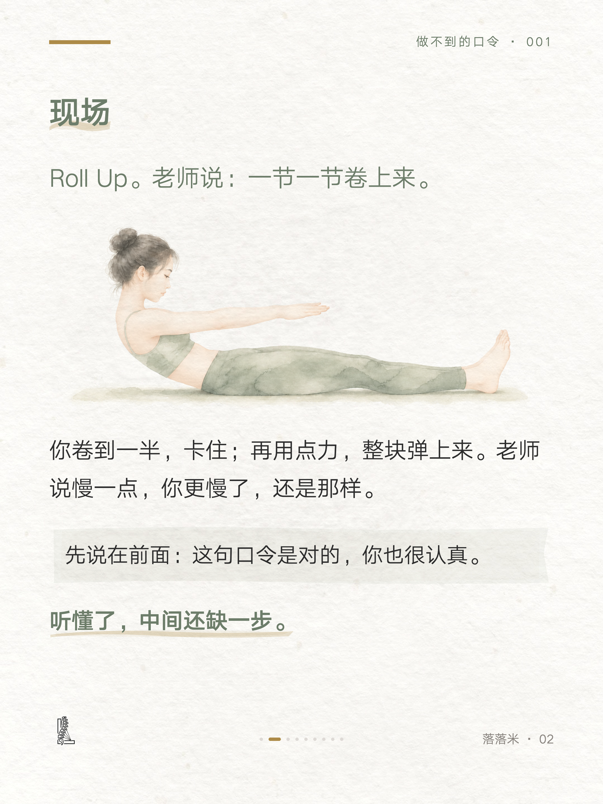
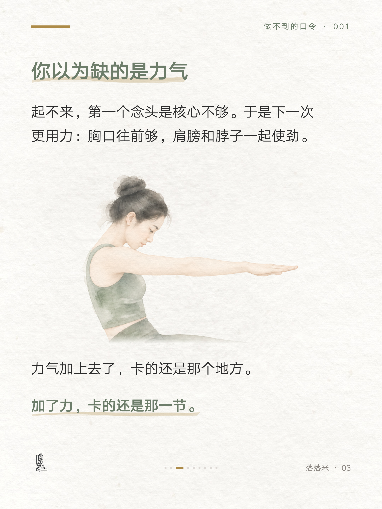
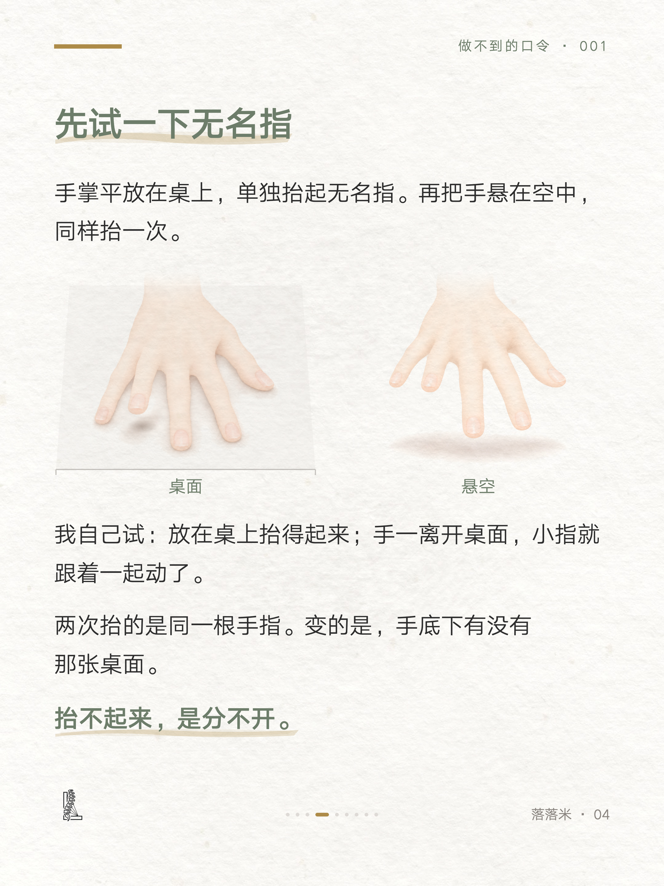
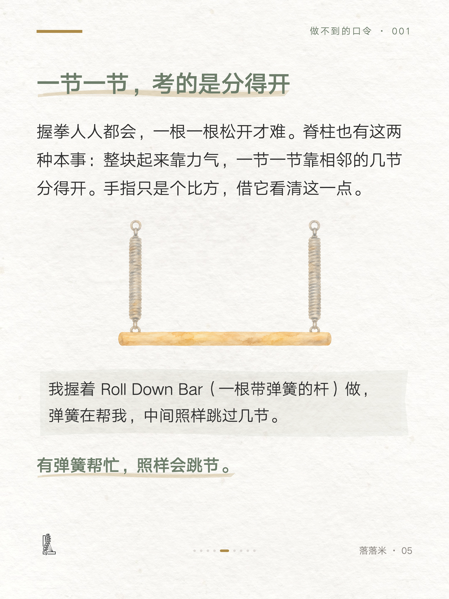
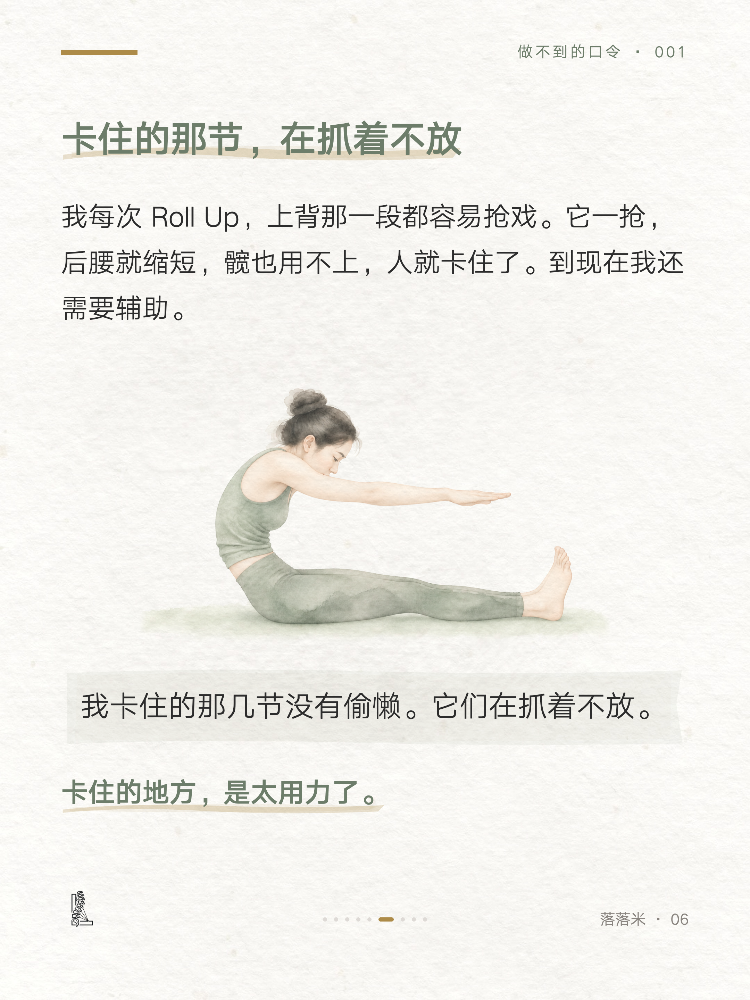
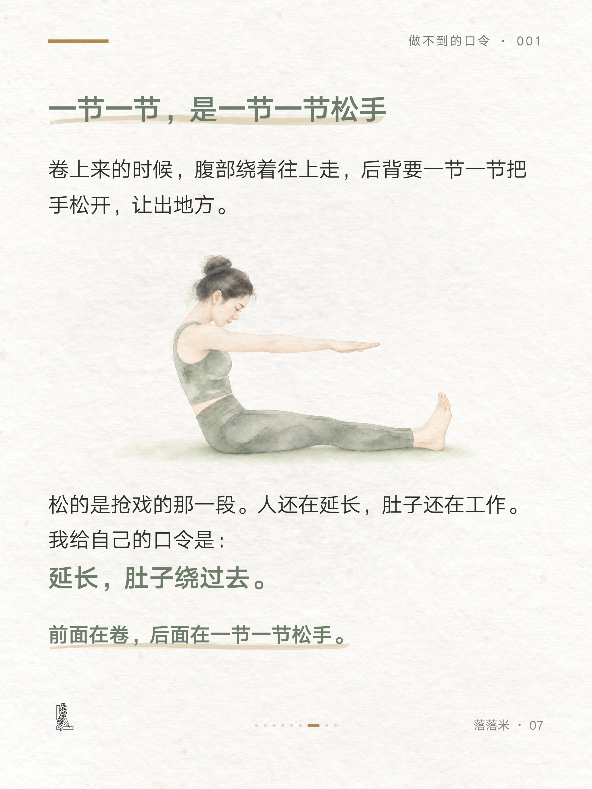
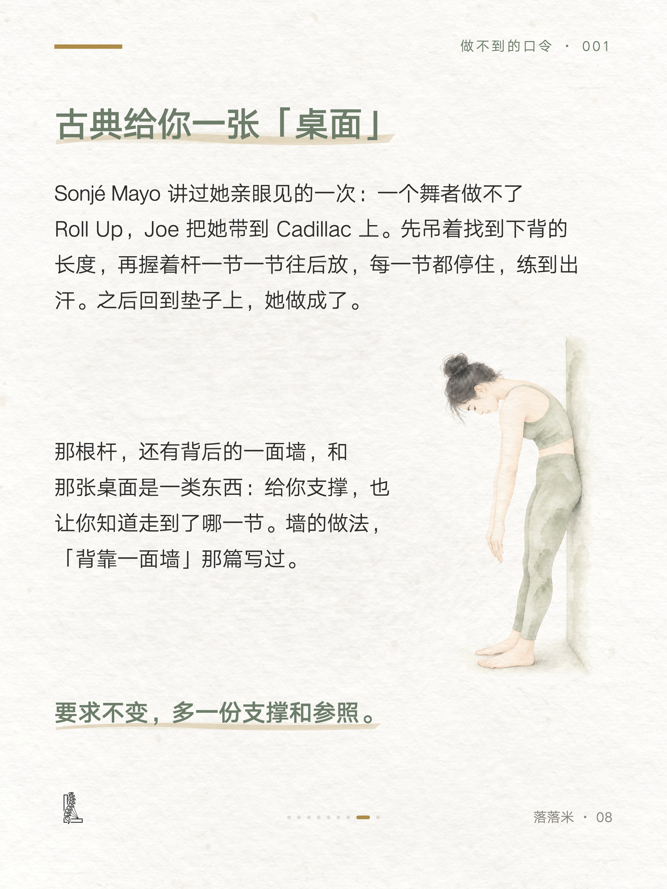
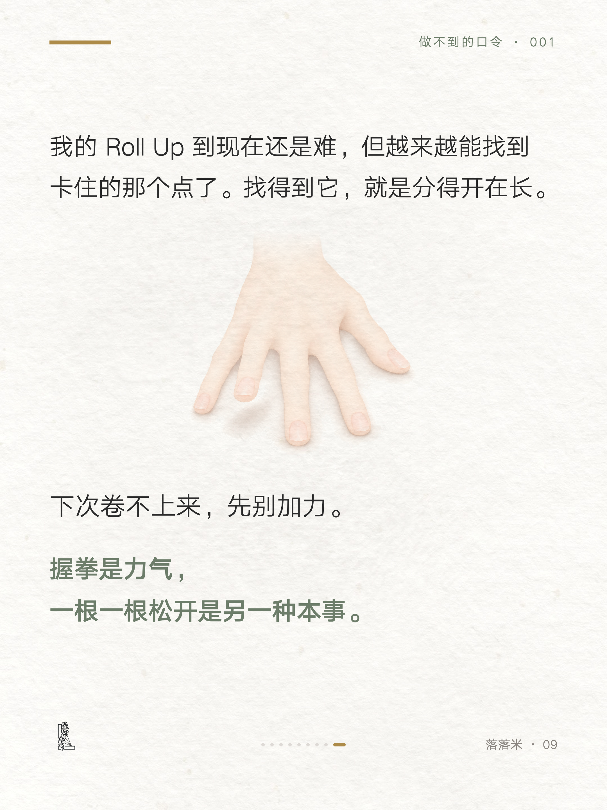

做不到的口令 #001
普拉提逐节卷动卷不动，先试试单抬无名指

1 / 9

2 / 9

3 / 9

4 / 9

5 / 9

6 / 9

7 / 9

8 / 9

9 / 9
← 左右滑动浏览全部卡片 →
Roll Up 卷到一半卡住，再用点力，整块弹上来。老师说一节一节，你更慢了，还是那样。
先试一件小事：手掌平放在桌上，单独抬起无名指；再把手悬空抬一次。我放在桌上抬得起来，一离开桌面，小指就跟着动了。两次抬的是同一根手指，变的是手底下有没有那张桌面。
「一节一节」考的也是这个：分得开。我每次 Roll Up，上背那段都容易抢戏，它一抢，后腰就缩短，人就卡住。卡住的那几节是太用力了。
这篇讲一节一节为什么力气帮不上，还有 Joe 当年给了一个做不了 Roll Up 的舞者什么。